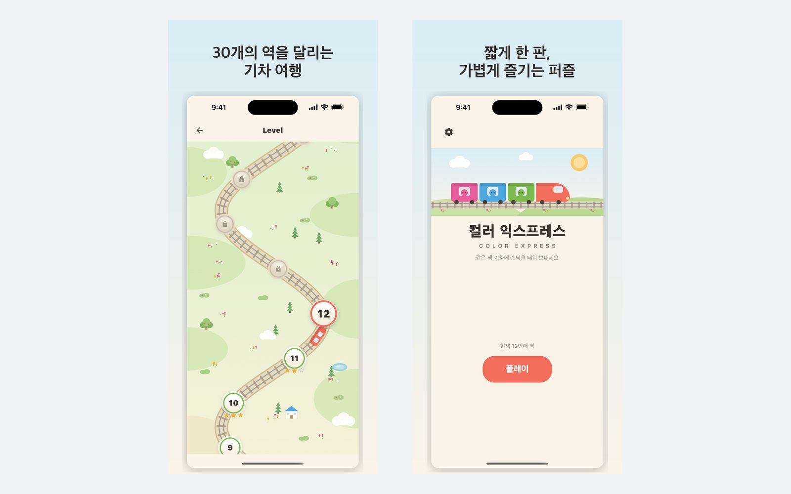

규칙은 하나, 대신 엄격합니다
판 끝까지 한 번도 끊기지 않는 직선 — 위·아래·왼쪽·오른쪽. 꺾어 가는 건 길이 아닙니다. 이 한 문장에서 게임의 나머지가 전부 따라 나옵니다.
세 자리짜리 색 기차가 승강장에 섭니다. 색이 맞는 손님을 탭하면 타는데, 나가는 직선 하나가 끝까지 뚫려 있어야 합니다. 시간 제한도, 목숨도, 회원가입도 없습니다.

이 게임의 발상
색은 1초면 맞춥니다. 어려운 건 그 손님을 밖으로 빼내는 일입니다. 손님은 상하좌우 중 한 방향이 판 끝까지 완전히 비어 있을 때만 나갈 수 있습니다. 꺾어 가는 길은 길이 아닙니다. 그래서 판은 바깥부터 읽게 됩니다 — 가장자리를 치워 뒷줄을 열고, 또 그 뒷줄을 엽니다.
들어 있는 것
판 끝까지 한 번도 끊기지 않는 직선 — 위·아래·왼쪽·오른쪽. 꺾어 가는 건 길이 아닙니다. 이 한 문장에서 게임의 나머지가 전부 따라 나옵니다.
모든 배치는 생성한 뒤 솔버가 검사합니다. 반드시 풀려야 하고, 동시에 벤치 없이는 풀리지 않아야 합니다. 둘 중 하나라도 실패한 배치는 버려지고 앱에 들어가지 않습니다.
70개 레벨마다 검증된 배치가 6개씩 들어 있고, 그중 하나를 무작위로 고릅니다. 다시하기도 마찬가지입니다. 방금 실패한 판과 지금 시작하는 판은 다른 판입니다.
색이 다른 손님은 칸이 몇 개 없는 벤치에서 기다립니다. 벤치가 다 찼는데 길이 없으면 그 판은 끝입니다. 뒤로 갈수록 손님이 늘어나는 게 아니라 벤치가 줄어듭니다.
별점은 점수가 아니라 벤치에 몇 명을 앉혔는지로 매깁니다. 별 셋은 벤치를 거의 쓰지 않았다는 뜻입니다.
1초를 생각하든 1분을 생각하든 같습니다. 줄어드는 것도, 떨어지는 것도, 내일 다시 오라는 것도 없습니다.

어떻게 만들어졌나
2026년 7월, Flutter와 Flame으로 만든 색 맞추기 프로토타입에서 시작했습니다. 격자 위의 손님들, 그리고 한 번에 셋을 태우는 엘리베이터.
규칙은 거의 곧바로 바뀌었습니다. 원래는 미로처럼 길을 찾는 방식이었는데, 그러면 판을 한눈에 읽을 수가 없었습니다. 이것을 판 끝까지 가는 직선 하나로 바꾸자 모든 수가 눈에 보이게 됐고, 대신 계획하기는 훨씬 어려워졌습니다.
엘리베이터는 기차가 되고, 색은 일곱 가지로 늘고, 레벨은 손으로 만들기를 그만뒀습니다. 지금은 솔버가 70개 레벨을 배치 6개씩 만들고 검사합니다.
개인정보
계정도, 클라우드도, 기록을 올릴 순위표도 없습니다. 진행 상황은 기기 저장소에 든 숫자 몇 개고, 앱을 지우면 같이 지워집니다. 이 게임은 무료이고 광고가 붙어 있어서, Google AdMob이 통상적인 광고 식별자와 기기 정보를 수집합니다 — 그 내용은 개인정보 처리방침에 전부 적어 두었습니다.
무료이고 오프라인에서도 돌아갑니다. 네트워크는 광고에만 씁니다. App Store와 Google Play에 곧 출시됩니다.